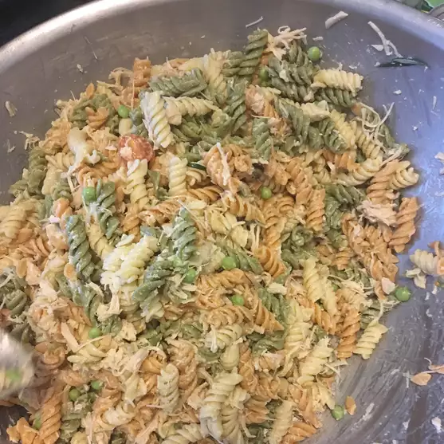

Zesty Cold Chicken Pasta Salad

Description
A quick, easy, tasty, and colorful chicken pasta salad that looks as great as it tastes.
Serve at room temperature or cool for at least 1 hour.
Ingredients
- 1 (8 ounce) package rotini pasta
- 1 cup fat-free mayonnaise
- 1 teaspoon lemon pepper seasoning
- 1/2 teaspoon dried mustard
- 24 cherry tomatoes, halved
- 1 (15 ounce) can peas, drained
- 2 (5 ounce) cans chicken packed in water, drained
- 1 pinch paprika
Steps
- Step 1: Bring a large pot of lightly salted water to a boil; cook rotini at a boil until tender yet firm to the bite,
about 8 minutes. Drain and rinse with cold water.
- Step 2: Mix mayonnaise, lemon pepper seasoning, and dried mustard together in a large bowl.
Mix in cherry tomatoes, peas, and chicken.
Fold in rotini. Sprinkle paprika over salad before serving.